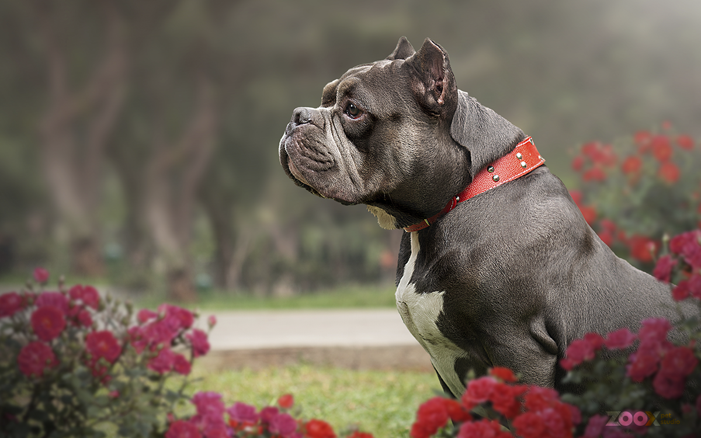

ZOOX Studio
Retratos que cuentan su historia. Sesiones fotográficas creativas para mascotas, realizadas en exteriores y espacios especiales. Creamos retratos únicos que capturan su personalidad y convierten cada momento en un recuerdo extraordinario.
SOLO PARA PETLOVERS